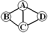
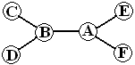

| Source file: | search.{c, cpp, java} |
| Input file: | search.in |
|  |
 |
| Figure 1 | Figure 2 |
A police unit has dealt with a number of situations where
they need to search multiple sites as rapidly as possible with a small
group of officers. Figures 1 and 2 are diagrams for two situations. Sites to
search are labeled with capital letters. The site labeled A is the
common starting point. Some of these locations have connecting
paths. Assume each connecting path takes one unit of time to
traverse, and individual sites take no time for a visual search.
Consider Figure 1. If there are 3 or more officers it takes
only one unit of time to search. Different officers follow paths
AB, AC, and AD. If there are two officers, the complete search
will take two time units. For example one officer could follow
the path ABC and the other AD.
Consider Figure 2. If there were 3 officers, they could follow
paths ABC, ABD, and AEAF and take 3 units of time. With 2
officers they could follow paths ABCBD and AEAF, and take 4 units of
time.
These are simple enough examples to figure out by hand. For more complicated arrangements they want your programming help.
A dataset is a single line starting with blank separated positive integers s n p, where s is the number of sites to search, n is the number of officers, and p is the number of connecting paths between search sites. Limits are 2 ≤ s ≤ 10, 1 ≤ n ≤ 4, and p ≤ 20. The rest of the line contains p pairs of capital letters, indicating paths between sites, each preceded by a blank. Sites are labeled with the first s capital letters. All sites will be connected by some sequence of connecting paths. The two letters in each letter pair will be in increasing alphabetical order. No letter pair will be repeated.
Output: There is one line of output for each data set, containing only the minimum search time for n officers starting at site A.
Take some care with your algorithm, or else your solution may take
too long.
The sample input data sets correspond to the scenarios discussed.
| Example input: | Example output: |
| 4 4 5 AB BC CD AD AC 4 2 5 AB BC CD AD AC 6 3 5 AB BC BD AE AF 6 2 5 AB BC BD AE AF 0 |
1 2 3 4 |